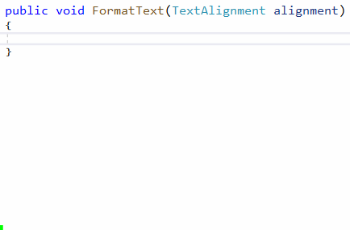
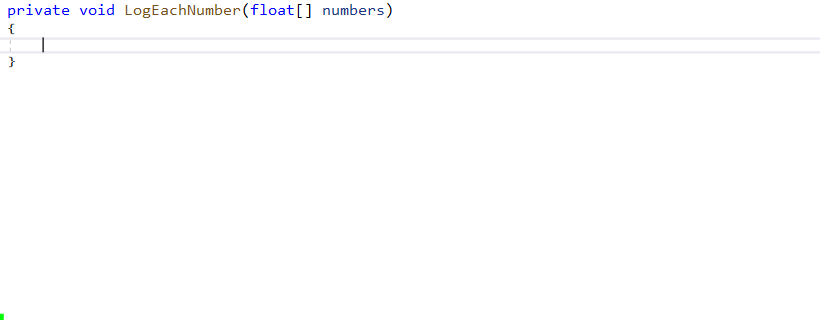

Instead of executing every instruction once each in the same order every time the program is run, you will often need to control the flow of the program to only do things under certain conditions or repeat the some instructions until a condition is met. The most common flow control Statements are:
| Keyword | Effect |
|---|---|
if else |
Execute some code depending on whether a condition is true or false. if statements used to assign a value can also be written using the Conditional Operator. |
switch |
A more complex form of if that allows you to choose between multiple cases (more than just true or false). |
while |
Like if, but when it reaches the end of the code block it loops back to check the condition again. So if the condition is never false, it will get stuck in an "infinite loop" as it keeps executing the same code repeatedly without continuing on to run the rest of the program (meaning it looks like the program is frozen because it does not even get to render new frames to the screen). |
for |
A more complex form of while which allows you to initialize variables before it starts, check a condition, and specify what happens at the end of the loop, all in one statement. |
foreach |
Similar to for, but specifically used to iterate through every element in a collection (such as an Array). |
return |
Immediately ends the current method. If the method has a non-void Return Type, it must return a value of that type. |
Snippets
Most IDEs have ways to quickly insert default Code Snippets for common keywords. For example, in Visual Studio, you can:
- Type
switch. - Press
Tabtwice. - Replace
switch_onwith the variable you want to target. - Press
Enter.
That will insert the framework of a switch statement. This is especially useful when you want to use an enum as the target because it will automatically insert a case for every value in that enum.

The for snippet is also very useful for iterating through arrays and lists. It allows you to choose a name for its iterator variable (i by default) then press Tab to choose its length variable before you press Enter to complete the snippet:

The forr snippet inserts a reversed for loop which starts at the end and iterates backwards to the start.